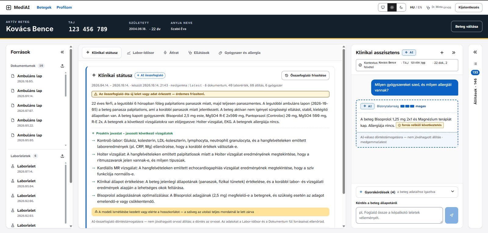
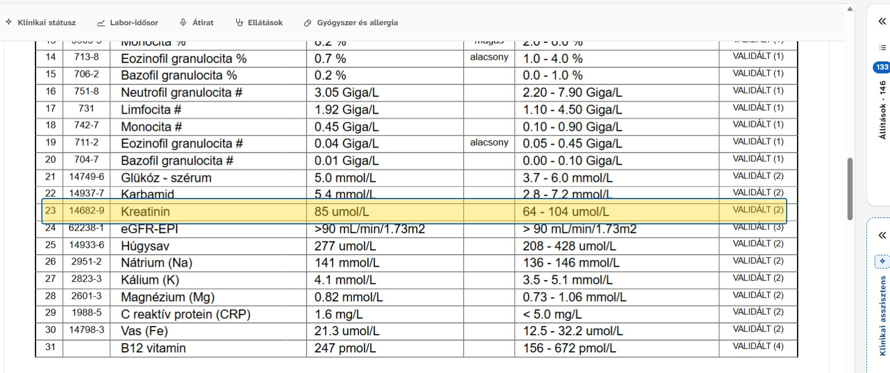
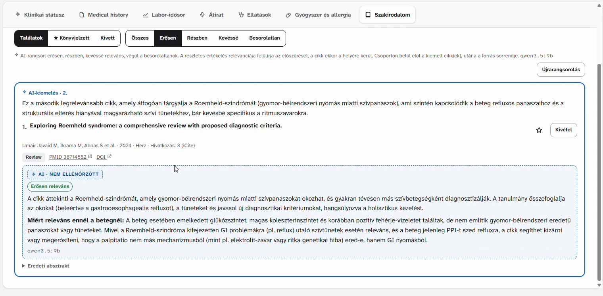
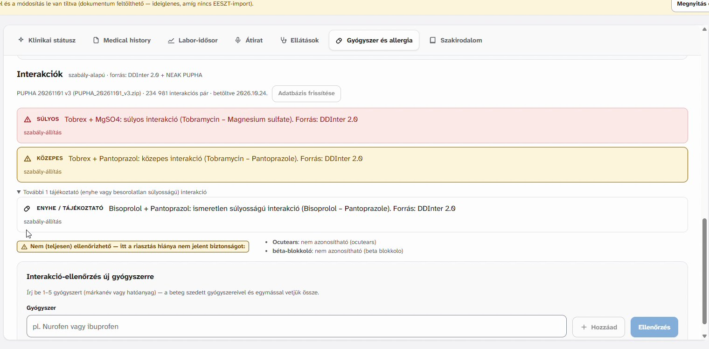

The complete patient picture and fresh scientific evidence, at your fingertips.
A clear picture of the patient within minutes, patient-specific literature in one click, and a source behind every statement.

Scattered clinical data,
scarce physician time
A patient's history is scattered across outpatient notes, lab reports, discharge summaries and medication lists, often from several institutions. Physicians have only minutes to take it all in and make a responsible decision.
The full picture in minutes
The system consolidates all of the patient's documents and gives an immediately clear view of the current condition.
Knowledge tailored to the patient
Fresh, relevant publications for the specific patient's condition in one click, with a rationale.
Trust and security
Every statement is traceable to its source, and patient data never leaves the institution.
¹ Sinsky C. et al.: Allocation of Physician Time in Ambulatory Practice. Annals of Internal Medicine, 2016. ² Del Fiol G. et al.: Clinical questions raised by clinicians at the point of care. JAMA Internal Medicine, 2014.
One system for the entire patient journey
MediAI Assistant supports every step of the physician's daily work, from reviewing reports to writing the discharge summary.
Unified patient view
All reports in one place, automatically recognised and organised.
Labs and medications
Trends over time, abnormal values and drug interaction alerts.
Clinical status
A clear summary with proactive suggestions for further tests.
Clinical assistant
Free-text questions about the patient: the AI answers from the patient's documents, and every answer cites its source.
Literature research
Fresh publications for the patient, with a rationale for their relevance.
Voice-based documentation
Structured documentation generated automatically from the patient visit.
Ultrasound reporting
Echocardiography dictation during the exam, with validated measurements.
Medical history and discharge summary
In one click, editable and exportable.
All of this runs entirely on the institution's own server, using several medically fine-tuned AI models, with no external AI provider and no token-based fees.
The complete medical history at a glance
Patient reports can be imported easily. MediAI Assistant recognises and categorises the documents, extracts the data and re-evaluates the whole patient.
- Lab timeline: trends over time are instantly visible, with abnormal values highlighted.
- Drug interactions: rule-based alerts by severity from a public drug database, including what could not be checked.
- Clinical status: a clear summary with critical warnings and proactive test suggestions.

Every statement with its source
MediAI Assistant is not a black box. The AI analyses, but verification and decisions always stay with the physician.
- One click to the source: the original document opens with the exact line or passage highlighted.
- Three clearly separated kinds of statement: rule-based alerts, verbatim source quotes, and AI inferences with an uncertainty label.
- Verified quotes: quote matching is checked by the system, not by the AI.
- The physician decides: every statement can be accepted, edited or rejected, and every decision is logged.

Personalised scientific research with deep search
Clinical questions come up constantly during patient care. Within seconds, MediAI Assistant finds fresh publications that match the specific patient's condition and explains why they are relevant.
- Patient-specific search: the query is proposed from the patient's clinical picture and can be edited by the physician.
- Trusted sources: PubMed, Cochrane reviews, Europe PMC. Authors, year and identifiers always come from the source.
- Intelligent ranking: every hit is rated for relevance, and the most important ones are highlighted with a rationale.
- Data protection: only the physician-approved search query, filtered of identifiers, leaves the institution.

The physician focuses on the patient while the documentation writes itself
MediAI Assistant documents a simple patient visit just as well as a specialist examination.
- Records the conversation and separates speakers using the physician's voice profile.
- Structured documentation in six groups: complaints, examination findings, diagnoses, suggested medications, referrals, recommendations and follow-up.
- A summary traceable sentence by sentence: every statement links to the exact utterance.
- A dedicated mode tuned for echocardiography dictation: measurements can be dictated during the exam.
- The system extracts the measurements and flags implausible values.
- Numbers, units and negations can never be altered by the AI.


Medical history and discharge summary in one click
What used to take hours is now complete within minutes.
- Medical history summary and clinical timeline built from all reports, each entry linked to its source document.
- Discharge summary draft from the episode's reports, voice recordings and medication list.
- Built-in checks: if a quote cannot be found in the source, the line is marked "To be verified".
- Editable and exportable: to Word format in one click.

When every minute counts
An ambulance is bringing a patient to the hospital. The physician has only a few minutes to prepare for the arrival. MediAI Assistant helps make those few minutes enough.
Before arrival: the full picture
Previous reports, labs and the medication list in one place, with a short status summary.
Risks at a glance
Abnormal lab values, known allergies and drug interactions highlighted by severity.
Checking the planned treatment
A planned drug can be checked instantly against the current medication list, and the assistant can be asked what speaks for or against it, with source references.
Fresh evidence when needed
Literature matching the patient's condition within seconds, with a rationale.

Complete data security,
predictable cost
All clinical processing happens on the institution's own server. No external AI provider, no token-based fees.
Predictable cost
- No token-based fees and no usage-based payments to external AI providers.
- No hidden costs and no unpredictable cost factors.
- Costs can be planned and do not depend on usage volume.
Transparency
- Append-only access log: who opened what, and when.
- The source of each statement, the model identifier and the history of physician approvals are all retrievable.
- The architecture is designed to support GDPR, MDR and EU AI Act requirements.
Runs fully on-premise
- All clinical processing runs on the institution's own server without an internet connection.
- Several medically fine-tuned AI models work together, each on the task it suits best.
- Patient data is never passed to third parties, including external AI providers.
Wherever a comprehensive patient picture is needed fast
Emergency departments
A full picture of an unknown patient within minutes, even before the ambulance arrives.
Internal medicine and cardiology
A unified summary of many earlier reports (echocardiography, Holter, labs).
Private healthcare
Faster, more thorough, well-documented care and a premium service experience.
Specialist outpatient clinics
Voice-based documentation and ultrasound reporting in daily routine.
Gives time back
Takes over information gathering and documentation.
Better decisions
Proactively flags risks and missing tests.
Fresh science
Patient-specific literature at the point of care.
Trust
Every statement verifiable in one click.
Security
Runs on-premise at a predictable cost.
Frequently asked questions
Where do the AI models run?
On the institution's own server. Clinical processing, including the language models and speech recognition, runs without an internet connection.
Is any patient data sent to external providers?
No. The only outbound data is the literature search query, which the physician sees and approves, and from which the system removes patient identifiers.
Are there usage-based or token-based fees?
No. Because the models run locally, there are no usage-based payments to external AI providers, so costs can be planned in advance.
Does it replace the physician?
No. MediAI Assistant is a decision support tool: it analyses, summarises and shows sources, but the physician accepts, edits or rejects every statement.
How do I know an AI statement is correct?
Each statement shows its type (rule, verbatim quote or AI inference), and its source opens in one click with the exact location highlighted.
Which languages does it support?
The interface is available in Hungarian and English, and processing is prepared for Hungarian-language medical documents.
specialist research,
an AI-powered assistant